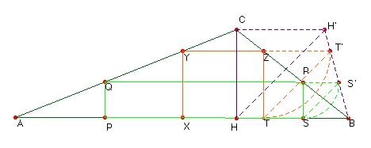
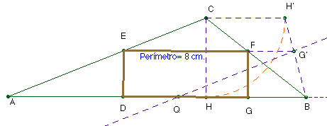

Solución del profesor de Matemáticas del IES Fray Luis de León de Salamanca Saturnino Campo Ruiz
Problema nº 74.- Dado un triángulo de lados 7 c., 5 cm, y 3cm, inscribir un rectángulo de perímetro 8 cm.

Solución.-Para inscribir un rectángulo basta con seleccionar un punto P en la base AB del triángulo. Obtenemos el rectángulo PQRS. Un giro de 90º con centro en R nos lleva el vértice S a la posición S’, tal que el segmento QS’ es el semiperímetro del rectángulo inscrito. Si inscribimos otro rectángulo XYZT, obtenemos de igual manera el punto T’ tal que YT’ es igual a su semiperímetro. Los triángulos SRS’ y TZT’ son rectángulos e isósceles, con los vértices Z y R alineados con B, así como los vértices S y T. Son triángulos homotéticos por una homotecia de centro B; por ello también están alineados los vértices S’ y T’.De todos los rectángulos inscritos el de mayor altura, caso extremo, es aquel rectángulo impropio cuya base es cero (se ha reducido a la altura CH del triángulo, el de menor altura se reduce al segmento AB).

Cualquier rectángulo inscrito quedará determinado tomando un punto sobre el segmento BH’ y trazando por él una paralela a la base AB. El segmento interceptado por el triángulo nos da la base superior del mismo. Para determinar el de perímetro 8 cm., llevamos sobre la base AB el segmento AQ = 4 cm. (el semiperímetro). Una paralela a AC por Q determina el punto G’ que resuelve el problema.Nota.- En el dibujo hemos tomado como unidad de medida 2 cm